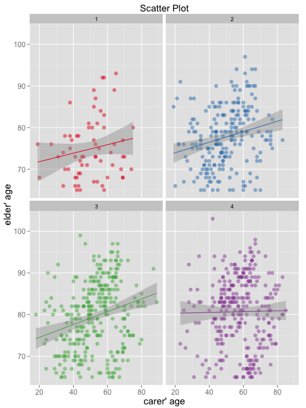

What is Linear Regression?
Linear regression is a fundamental machine learning algorithm which is often used for classification and prediction problems. It uses a linear combination of variables or function of variables to predict a value of an output variable.
Before heading into Linear Regression,we will review supervised learning in a section below. Then we’ll move into theory and usage of linear regression. Finally, we’ll finish of with methods of training a linear regression model.
